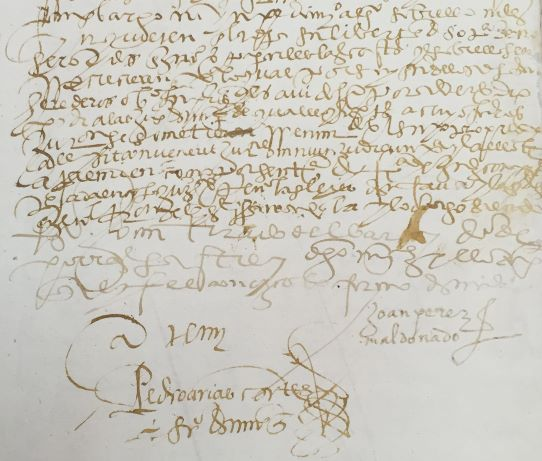
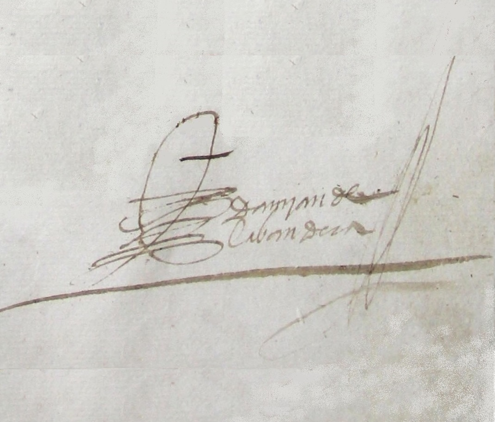

"Instrucción para descubrir todas las guacas del Pirú y sus camayos y haziendas" [ca 1581-1585] en Henrique Urbano y Pierre Duviols (eds.). Relación de las fábulas y ritos de los Incas. Madrid: Historia 16, 1989.
De las costumbres y conversión de los indios del Perú: Memorial a Felipe II [1588]. Madrid, Polifemo, 1998.
"Relación general de la disposición y calidad de la provincia de Guamanga, llamada San Joan de l frontera y de la vivienda y costumbres de los naturales della-año de 1557", en José Urbano Martínez Carreras (ed.). Relaciones Geográficas del Indias- Perú por Don Marco Jiménez de la Espada, vol I, pp.176-180. Madrid, Atlas, 1965.